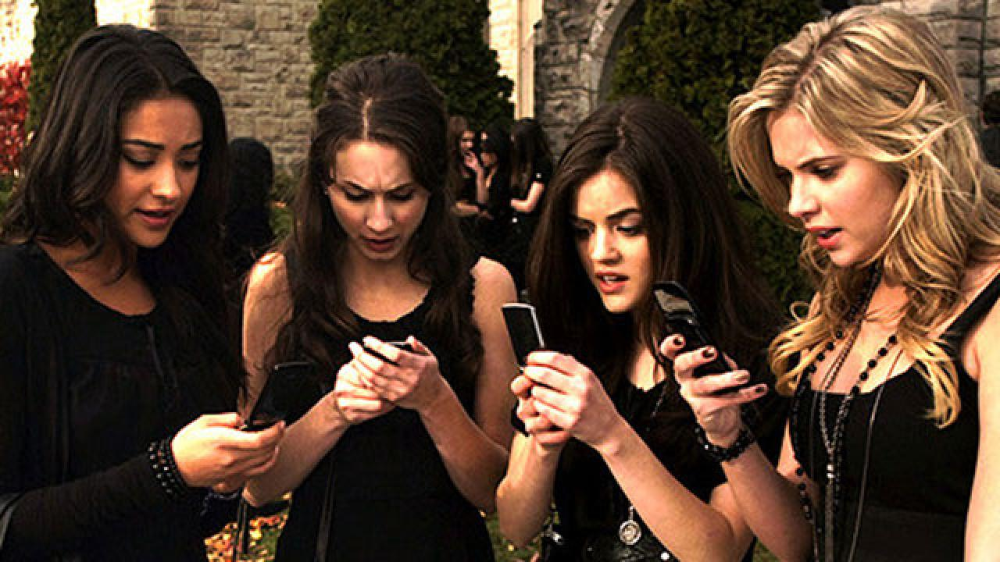

How We Fall Apart
August 15th, 2021
I've been following Katie Zhao for quite some time on Twitter, and I was pretty excited to see a dark academia story that focuses on Asians, especially since dark academia, in general, is built on whiteness.
How We Fall takes place in Sinclair Prep, where we follow Nancy, Krystal, Akhil, and Alexander as they are blackmailed after the death of Jamie Ruan, the top student in their year at Sinclair and their former friend. Nancy, Krystal, Akhil, and Alexander all hide very big secrets that threaten to destroy their planned futures and their current standing at Sinclair.
This book does really well with its themes - the idea of the Model Minority, the idea that the American Dream is a meritocracy, the themes of privilege and power as it relates to class and money. Having Nancy and Alexander as scholarship students when everyone around them pretty much all come from families of immense wealth (and thus, power) was an interesting way to explore these themes. There is also the very familiar pressure that many Asian kids face of the expectation to be the best, and this book does well to show the (admittedly extreme) lengths that these teenagers will go to try to achieve that. Zhao allows her teenage characters to be very messy and chaotic beneath the perfect exterior that each child is pressured to be, and that was a choice that you don't see very often with Asian characters in media.
However, I do wish that I saw more of the character's relationships - as someone who has been in those pressure-cooker, competitive, not-quite healthy environments, a lot of the friendships shown made me wish that there was a bit more balance to what was shown in the book, especially the details of Nancy's friendship with Jamie. I get that it was an incredibly toxic friendship, but there were brief hints of positives in their relationship from a pure friendship perspective that I wish was explored a bit more so that the complexities of their friendship could really be laid out. I get the sense that there was more to why Nancy and Jamie were friends for so long besides the reasoning that was given in the book of the fear Nancy had if she wasn't friends with Jamie, but we simply didn't see it, which ended up giving a very one-dimensional view of only the negatives in their friendship, when in fact Nancy does hint that there had been good things too. I also wish more was shown between our group and their friendships, especially since there were plenty of hints of how The Incident had banded the five of them together, but we never actually got to see those moments that would lead me to believe that the others in the group are each individual's closest friends at Sinclair.
Overall, this was a fast read that I enjoyed. Make sure you check out the content warnings - there are a lot of darker subjects that get discussed! I would recommend this book to people who are fans of Pretty Little Liars or One of Us is Lying.
A thank you to Bloomsbury and NetGalley for the ARC.

More about How We Fall Apart here:

Title: How We Fall Apart
Author: Katie Zhao
Nancy Luo is shocked when her former best friend, Jamie Ruan, top ranked junior at Sinclair Prep, goes missing, and then is found dead. Nancy is even more shocked when word starts to spread that she and her friends--Krystal, Akil, and Alexander--are the prime suspects, thanks to "The Proctor," someone anonymously incriminating them via the school's social media app.
They all used to be Jamie's closest friends, and she knew each of their deepest, darkest secrets. Now, somehow The Proctor knows them, too. The four must uncover the true killer before The Proctor exposes more than they can bear and costs them more than they can afford, like Nancy's full scholarship. Soon, Nancy suspects that her friends may be keeping secrets from her, too.